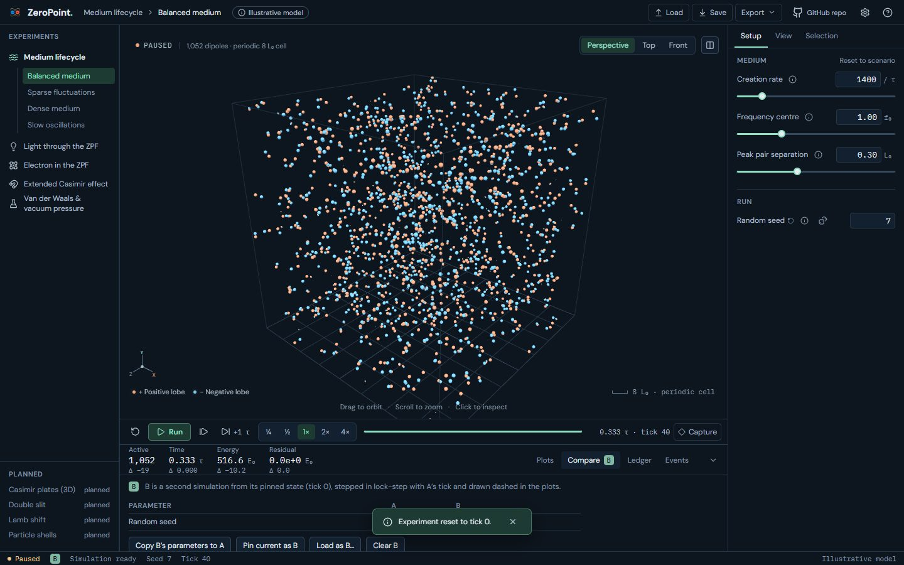
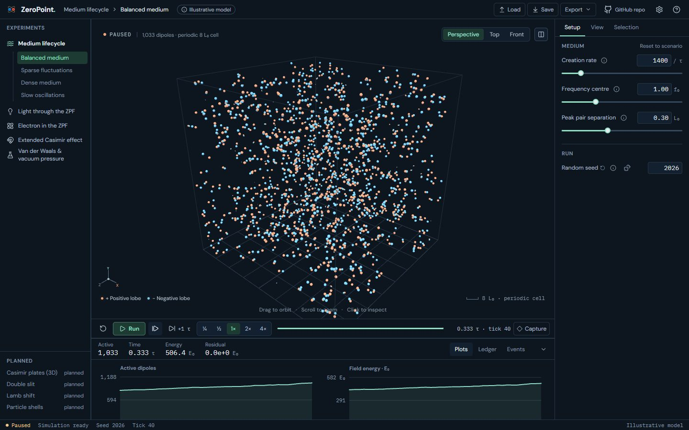
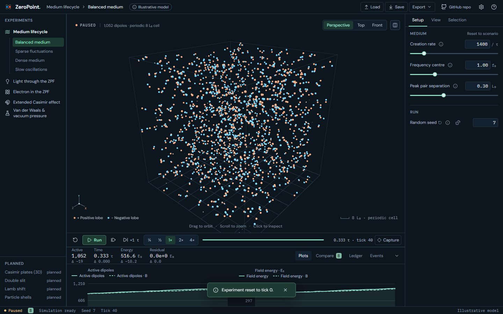

UI 17b · A/B compare for Medium: before and after
Medium's B is a headless second simulation: a small worker with no renderer that restores a pinned checkpoint and steps to A's tick, reporting only diagnostics (its step time appears in debug telemetry). Pin current as B pins A's exact state, so identical settings continue identically (every Δ is zero); here A then restarts with seed 7 while B keeps seed 2026, and the same ticks differ. If A goes back, B re-runs from its pin. A ◆ checkpoint pins B from its right-click menu, and Load as B pins B from a saved file, in Medium, Light and Electron. Plots draw B dashed; the strip shows Δ, now also for counts with thousands separators.
Real screens: "before" runs the layer below, and "after" runs this layer. Click an image to open it at full size. Regenerate with node scripts/compare-screens.mjs --before ../17a-compare --out docs/ui-previews/17b-compare-medium --set compare-medium --title 'UI 17b · A/B compare for Medium' --description 'Medium'\''s B is a headless second simulation: a small worker with no renderer that restores a pinned checkpoint and steps to A'\''s tick, reporting only diagnostics (its step time appears in debug telemetry). Pin current as B pins A'\''s exact state, so identical settings continue identically (every Δ is zero); here A then restarts with seed 7 while B keeps seed 2026, and the same ticks differ. If A goes back, B re-runs from its pin. A ◆ checkpoint pins B from its right-click menu, and Load as B pins B from a saved file, in Medium, Light and Electron. Plots draw B dashed; the strip shows Δ, now also for counts with thousands separators.'.
Medium · Dock › Compare: B (seed 2026) beside A (seed 7) after 40 ticks, Δ in the strip



Medium · Dock › Plots: B dashed beside A



